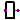

This package contains interface definitions (connectors) digital electrical components.
| Name | Description |
|---|---|
| Logic | Logic values and their coding according to IEEE 1164 STD_ULOGIC type |
| Digital port (both input/output possible) | |
| input DigitalSignal as connector | |
| DigitalOutput | output DigitalSignal as connector |
|  SISO | Single input, single output |
| Multiple input - single output |
type Logic = enumeration(
'U' "U Uninitialized",
'X' "X Forcing Unknown",
'0' "0 Forcing 0",
'1' "1 Forcing 1",
'Z' "Z High Impedance",
'W' "W Weak Unknown",
'L' "L Weak 0",
'H' "H Weak 1",
'-' "- Don't care")
"Logic values and their coding according to IEEE 1164 STD_ULOGIC type";
connector DigitalSignal = Logic "Digital port (both input/output possible)";
connector DigitalInput = input DigitalSignal "input DigitalSignal as connector";

connector DigitalOutput = output DigitalSignal "output DigitalSignal as connector";

| Type | Name | Description |
|---|---|---|
| input DigitalInput | x | Connector of Digital input signal |
| output DigitalOutput | y | Connector of Digital output signal |
partial block SISO "Single input, single output" import D = Modelica.Electrical.Digital; D.Interfaces.DigitalInput x "Connector of Digital input signal"; D.Interfaces.DigitalOutput y "Connector of Digital output signal"; end SISO;

| Type | Name | Default | Description |
|---|---|---|---|
| Integer | n | 2 | Number of inputs |
| Type | Name | Description |
|---|---|---|
| input DigitalInput | x[n] | Connector of Digital input signal vector |
| output DigitalOutput | y | Connector of Digital output signal |
partial block MISO "Multiple input - single output" import D = Modelica.Electrical.Digital; parameter Integer n(final min=2) = 2 "Number of inputs"; D.Interfaces.DigitalInput x[n] "Connector of Digital input signal vector"; D.Interfaces.DigitalOutput y "Connector of Digital output signal"; end MISO;